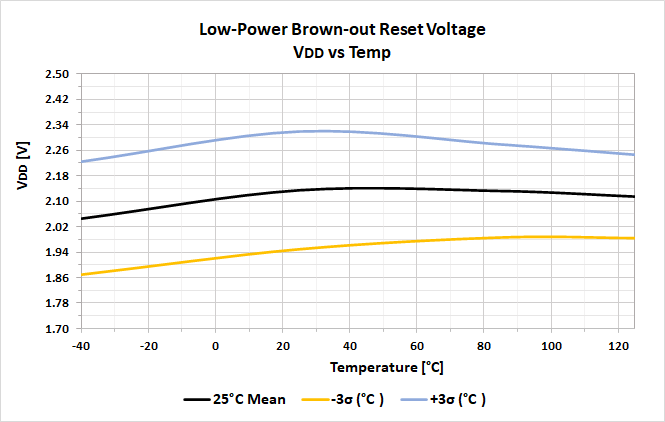
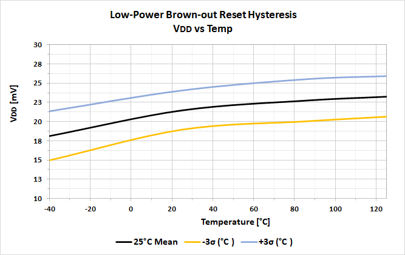

Contents
51 DC and AC Characteristics Graphs and Tables
51.13 Low-Power Brown-Out Reset Graphs
←
LFINTOSC Wake From Sleep Graphs
MFINTOSC Graphs
→
51.13 Low-Power Brown-Out Reset Graphs
Figure 51-92.

Figure 51-93.
